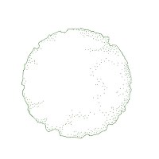
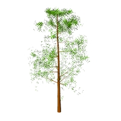
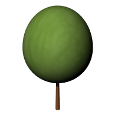

Plant
Where can I find this command?
laPlant
Icon:

left click
The plant is the main element in a garden or landscape and the most important object in Lands Design.
Insert a plant:
After running the laPlant command, the Plant insert dialog box will appear. This dialog shows the basic options of the
plant object in different tabs.
- Plant: Species, and Dimensions on the drawing.
- Format: Caliber and presentation mode of the plant species.
- Render: parameters that define how the plant will be displayed in a render view.
Steps:
- Select a plant species from the list, under the Plant tab. Click on the
Browse... button to select a new one from the Plant Database.
- Select the rest of insert parameters (Caliber, Presentation mode and
Dimensions on the drawing) and click OK to close the dialog.
- Select the insert points in the model with a left click. A new plant species will be inserted for each click. You can modify the plant parameters while inserting them from the Lands Design Edit
panel, in the Properties section, under the Plant tab.
- Press ENTER, ESC or right-click to end the command.

Insert dialog box for the Plant object.
Where can I find this command?
laPlant > F
Icon:

left click
Insert plants from points:
After running the laPlant > FromPoints command, the plant insert dialog box will appear. This dialog shows the basic options of the
plant object as described before.
Steps:
- Select a plant species from the list, under the Plant tab. Click on the
Browse... button to select a new one from the Plant Database.
- Select the rest of insert parameters (Caliber, Presentation mode and
Dimensions on the drawing) and click OK to close the dialog.
- Select the point objects in the model where you want to place the plants.
- Press ENTER, ESC or right-click to end the command.
Control Points 
Plants have one single control point, situated at the lower center point of the object.
Plant control points are automatically enabled when selecting plants one by one. To turn one ore more Plant object control points on just select the plants and run the PointsOn command (or press F10). To turn the points off, press ESC button or run the PointsOff command.
Insert options and parameters
The plant insert options and parameters are divided in different tabs, and are available from different dialogs:
General
General attributes for the plant object: Name, Color, Layer, and Transparency (only visible in Conceptual display mode).
Plant
- Species: Name of the selected plant species. The combo displays a list of the different plant species that have been already inserted in the current model. You can select a plant species from that list, or select a new one from the Plant Database, after clicking the
Browse... button.
- Dimensions on the drawing:
- Crown diameter
- Approximate height
- Age
- Natural variation: when enabled, this option sets a random height variation to plant species inserted or selected. The % value assigned will increase or decrease the plants size according to the Approximate height parameter.
- Random rotation: when enabled, this option sets a random rotation of plants. When disabled, you can specify a specific angle of rotation for each plant. The angle of rotation is measured from the plant vertical axis.
The minimum and maximum plant height values (plant age) are defined by each plant species properties and can be edited from the plant species Properties dialog, available from the Plant Database.
Format
- Caliber: dimensions of the plant species bark. There are some range of values available that go from 10 to 130 mm, but you can type any other value.
- Presentation mode: there are three types of presentation modes available, but you can type new ones.
- Naked root
- Root ball
- Container
Render
This tab determines how the plant object will be displayed in a render view. This tab is only visible when the plants 3D display is set to Realistic in the document properties.
- Season: when the Ignore global season box is checked, the user can choose in which season the plants will be rendered, choosing from the 7 values available: Early spring, Spring, Late spring, Summer, Late summer, Autumn, Winter...
- Foliage density: the plants will be rendered with more or less leaves depending on the level chosen.
Edit options
These are the edit options for the plant object, available in the
Edit area of the Edit panel:
Plant graphical display:
Lands Design offers different simultaneous 2D and 3D displays of plants on the drawing, with the purpose of handling plants from different conceptual levels. The Plant representation display can be changed in the Document properties.
Plant 2D display
|

|
|
| Crown |
Setting out symbol |
Plant 3D display
|
|

|

|
|
| Realistic |
Detailed |
Conceptual |
Elevations |